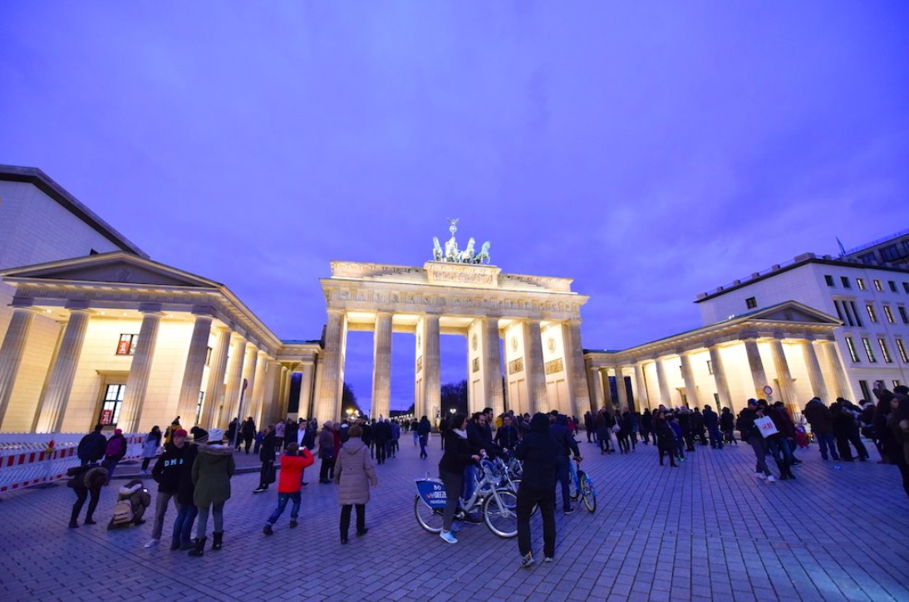
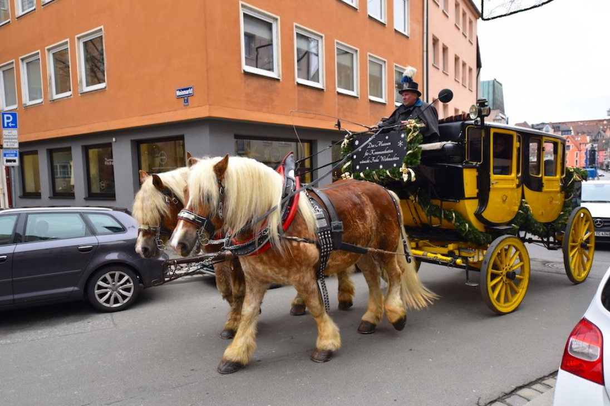
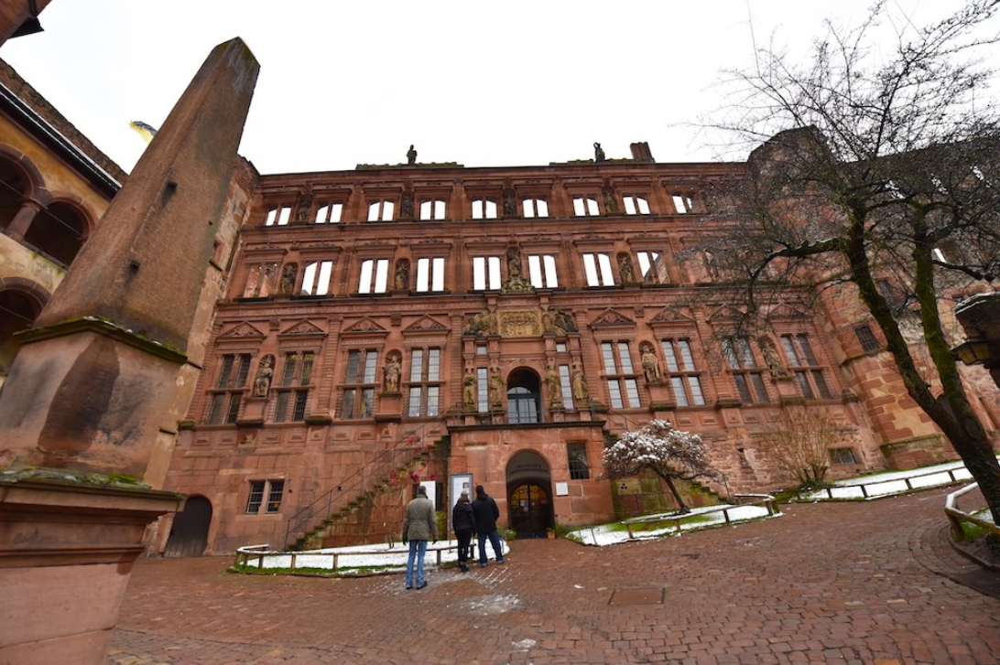
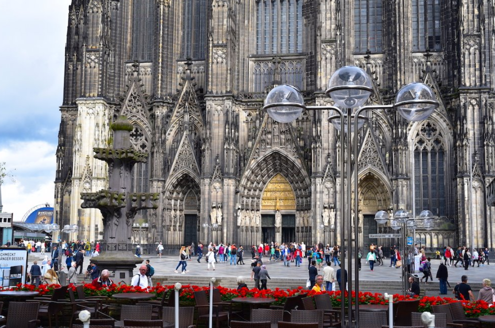

▶ 추천 장소
|  | 독일의 수도로 알려진 베를린은 과거에 서쪽과 동쪽이 분단 된 아픔의 상징이기도 했다. 하지만 지금은 베를린 장벽이 허물어져 그 주변은 여행지로 변화 되었고, 독일 정치의 중심지로 탈바꿈했다. 베를리너 돔, 제국의회의사당, 알렉산더 플라츠 티비 타워, 체크포인트 찰리, 베르나우어 슈트라세 장벽길 등 정말 많은 가볼만한 곳들을 보유하고 있다. 당일치기 근교 여행지로 포츠담 또한 추천한다. | |
|  | 또한, 겨울 시즌이 되면 뉘른베르크는 축제의 현장으로 바뀌는데 그 이유는 바로로 이 기간에는 정말 많은 방문객들이 찾아온다. 이외에도 뉘 크리스마스 마켓 때문이다. 유럽 3대 크리스마스 마켓 중 하나른베르크 성이나 여러 박물관, 시내 투어 등 방문해볼 만한 곳들이 정말 많다. 특히 이 곳의 특산 소시지는 꼭 한번 먹어봐야 하는 음식 중 하나이다. | |
|  | 세 번째로 하이델베르크는 우리나라 여행객들이 유독 많이 찾는 예쁜 독일 도시 중 하나이다. 굉장히 오래된 대학교가 있는 도시라 학생 도시로 불리우기도 하고 나름 작은 크기의 도시지만 프랑스 스트라스 부르와도 가깝고 스위스와도 가까워 근접 국가로의 접근성이 좋다. 도시 자체적으로도 가볼만한 곳이 굉장히 많은데, 대표적으로 사진에 보이는 하이델베르크 성부터 과거에 불량 학생들을 격리 시켜놓았던 학생 감옥도 있어 여러군데 신나게 다니기에 좋은 곳이라 생각한다. | |
|  | 마지막으로 쾰른은 독일 서부 하면 떠오르는 대표적인 곳이기도 하고, 다문화의 중심지로 불리운다. 쾰른의 랜드마크라고 할 수 있는 쾰른 대성당이 우뚝 서있는데, 그 높이가 정말 높아서 왠만한 카메라 렌즈로 한 프레임에 잡히지도 않는다. 높이는 대략 157m로 유네스코에서는 쾰른 대성당을 일컬어 “인류의 창조적 재능을 보여주는 드문 작품”이라고 묘사까지 했다. 고로 살면서 한번 쯤 죽기전에 꼭 봐야하는 세계 건축물 탑 100 안에 무조건 드는 곳이다. |